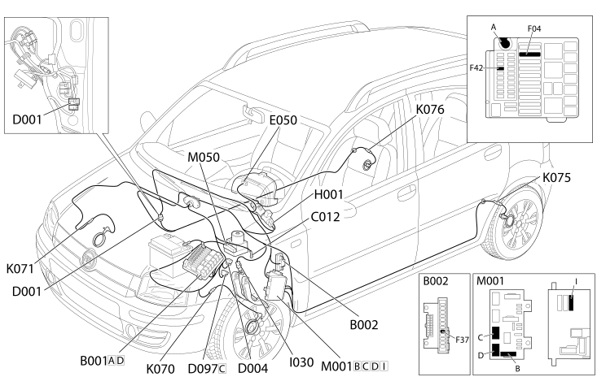

E7020 ABS - COMPONENT LOCATION
- Path
- Electrical equipment > 1 ELECTRICAL FUNCTIONS > E70 VEHICLE ELECTRONIC SYSTEMS > E7020 ABS > E7020 ABS - COMPONENT LOCATION
- Kind
- component location drawing
- Applies to
- engines: 1.1, 1.2 8v; all production periods
- Interactive page
- https://sloeber94.github.io/elrnDB-fPnd/en/#/169002448
Applies to: engines: 1.1, 1.2 8v; all production periods
Component location

COMPONENTS
Component code | Description | Reference to the assembly |
|---|---|---|
Engine compartment junction unit | ||
Junction unit under dashboard | ||
ABS front earth | - | |
front/dashboard coupling | - | |
Front/engine coupling | - | |
Short circuit coupling | - | |
Instrument panel | ||
Ignition switch | ||
Brake pedal switch | ||
Left front wheel sensor for ABS | ||
Right front wheel sensor for ABS | ||
Left rear wheel sensor for ABS | ||
Right rear wheel sensor for ABS | ||
Speedometer sensor | - | |
Body computer | ||
ABS control unit |
Topics linked from this page (22)
- 3340A abs check/adjustment devices
- 5505A multi-function components
- 5505C vehicle compartment wiring
- 5520A ignition switch
- 5550D BRAKE AND REVERSING LIGHTS
- 5560B analogue control panel
- E50 ENGINE CONTROL AND MANAGEMENT SYSTEMS
- B001 JUNCTION UNIT
- B002 JUNCTION UNIT UNDER DASHBOARD
- C012 ABS FRONT EARTH
- D001 FRONT/DASHBOARD COUPLING
- D004 FRONT/ENGINE COUPLING
- D097 SHORT CIRCUITING COUPLING
- H001 IGNITION SWITCH
- I030 BRAKE PEDAL SWITCH
- K070 LEFT FRONT WHEEL SENSOR FOR ABS
- K071 RIGHT FRONT WHEEL SENSOR FOR ABS
- K075 LEFT REAR WHEEL SENSOR FOR ABS
- K076 RIGHT REAR WHEEL SENSOR FOR ABS
- K084 SPEEDOMETER SENSOR
- M001 BODY COMPUTER
- M050 ABS CONTROL UNIT